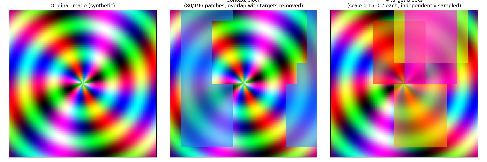

A from-scratch PyTorch implementation of Meta AI's Image-based
Joint-Embedding Predictive Architecture — a self-supervised method that
learns image representations by predicting meaning, not pixels,
and needs no hand-crafted augmentations to do it.
This is the core idea of I-JEPA, running live in your browser. Upload
any image and watch it get split into a context block (blue) and four
target blocks (warm colors) — the same multi-block sampling algorithm
used during real training, reimplemented here in JavaScript.
→ or see the full pipeline, stage by stage
Three networks, one loss. No pixel reconstruction, no contrastive
negatives — just prediction in representation space.
Image
│
├──► Context Encoder (ViT) ──► context tokens ──┐
│ sees only visible patches │
│ ▼
│ Predictor (narrow ViT)
│ + mask tokens per target
│ │
├──► Target Encoder (ViT, EMA of context) ──► │
│ always sees the FULL image target embeddings
│ never updated by gradient descent │
└────────────────────────────────────────────────────────┴──► L2 loss

Actual output from this implementation's masking.py — context block (center) with target-block regions removed, and the four independently-sampled target blocks (right).
Built from scratch
No timm pretrained weights, no borrowed model code — every piece below was implemented and unit-tested individually.
vision_transformer.py
Patch embedding, fixed sin-cos positional embeddings, pre-norm transformer blocks. Shared by context and target encoders.
Narrow ViT (width 384) taking context tokens + learnable mask tokens, predicting target representations by position.
training/ema.py
EMA target encoder, momentum ramped 0.996 → 1.0 — the mechanism that prevents representation collapse.
Results
Trained on CIFAR-10 (96×96) for 5 epochs on a small ViT (embed_dim=192,
depth=6) — a pipeline sanity run, not a reproduction of the paper's
ImageNet/ViT-Huge scale.